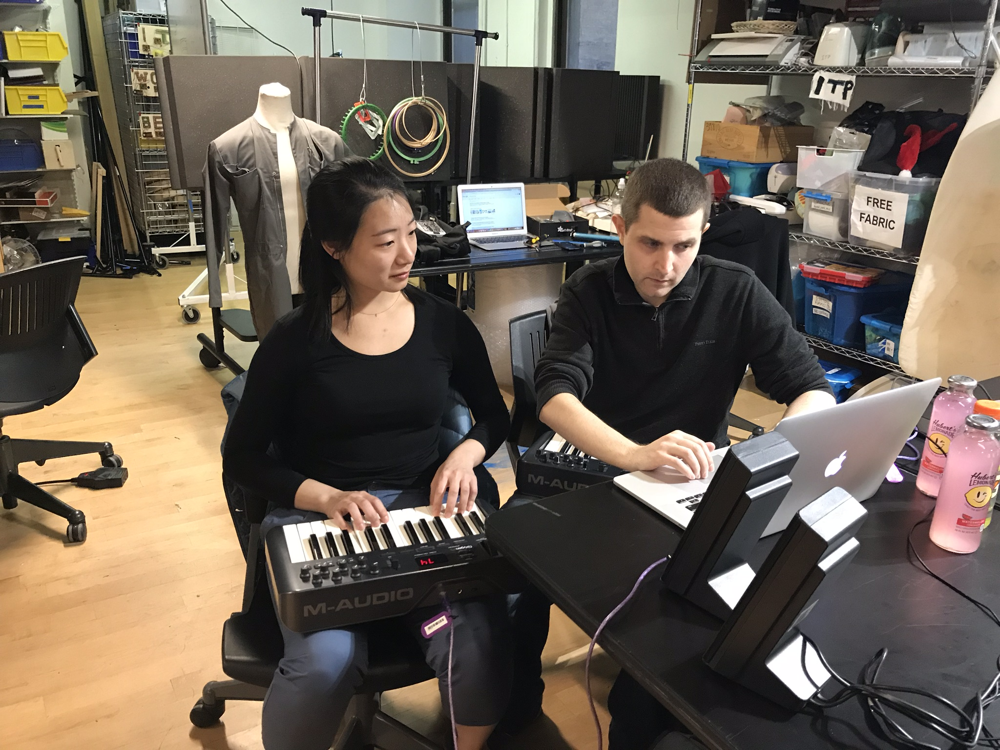
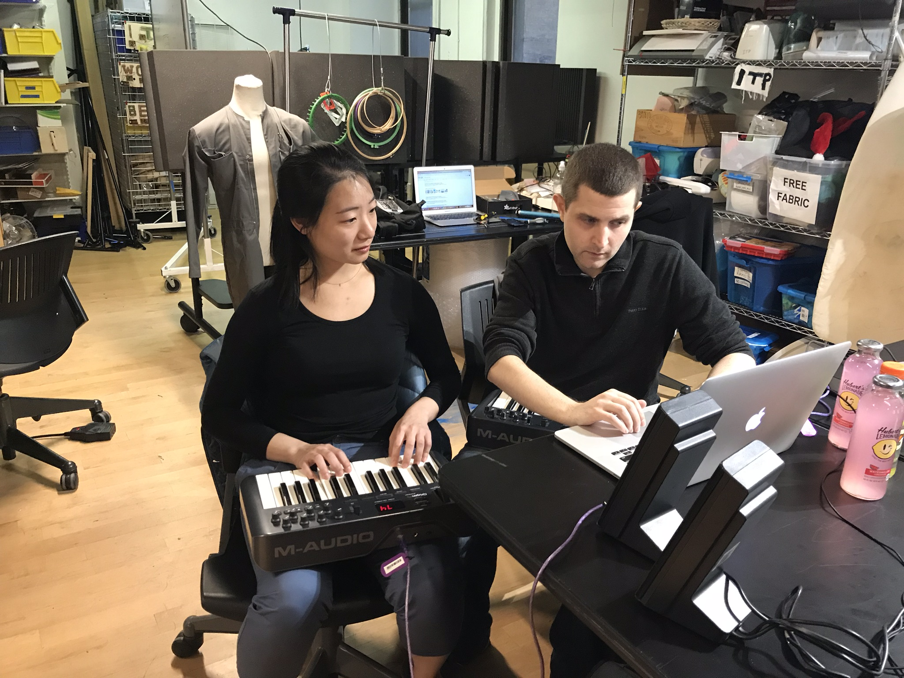

Concept Development
The Solution Space was conceived as a new collaboration within the Coal and Ice documentary photography exhibit. During four months the creative team worked in New York City in designing the interactive exhibits that would bring it to life. The fabrication was done in Oakland, CA by Scenic Inc. The goal was to contrast the dark, immersive, consequence-oriented space of Coal and Ice with a bright, optimistic, and reflective space to learn about ongoing efforts and possibilities of transforming the human behaviour that has led to the natural and social catastrophe characteristic of our century. Inspired by techniques and technologies that are currently available in various levels (from early studies to full market products). This space aims to communicate the need and plausibility of a new mindset of progress and innovation. Through open exploration it placed the visitor as the agent who through connecting the dots was able to build knowledge, visualize possibilities and ultimately take action. The space includes the work of six artists all affiliated with the Interactive Telecommunications Program at NYU's Tisch School of the Arts either as Research Residents or graduate students.
Ideation
The challenge was to balance this, while also developing a dynamic, active exhibit with compelling information without being overly didactic.


The individual exhibits demonstrate one general approach, technology, or technique both at high levels and at granular levels. Through interaction and exploration, visitors discover these ideas.

 

The interactive exhibits were designed by the team, but donations from SolarReserve and the San Francisco Parks department highlighted the importance or Energy Storage technology and Environmental Stewardship, respectively, in a more passive way. The team also curated video content from non-profits and organizations promoting circular economies and electrification.
The dots and banners allow each visitor to develop their own pathway, and links through the space.
Activating the Algae sphere, looking into the Regenerative Agriculture crates, listening to the videos within the circular economy space, renders the message clear. As a scientific society we have developed the knowledge and tools that allow us to exist in this planet without destruction. And most importantly without jeopardizing health, confort or communication. Important individual changes are needed in order to make this a wider reality, but the infrastructure and the knowledge is there.